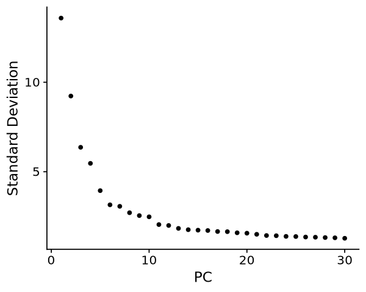
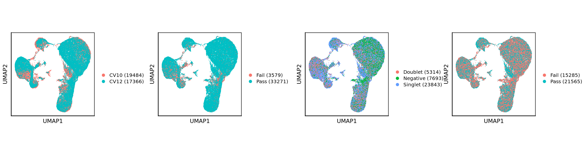
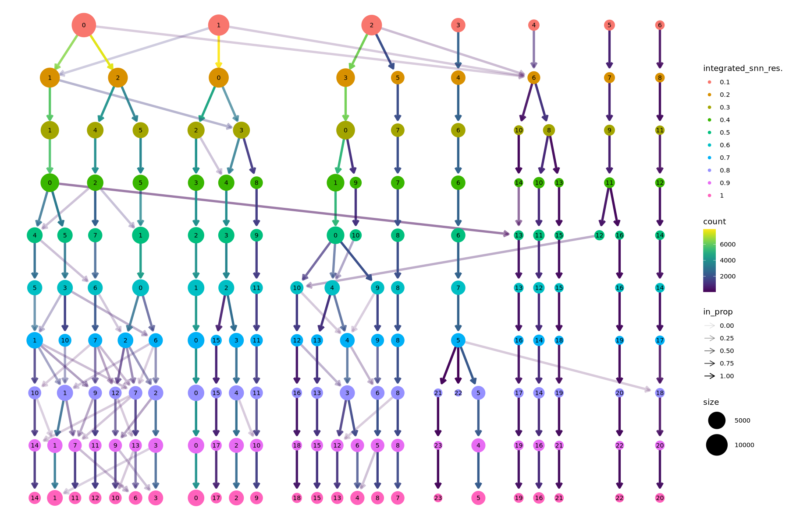
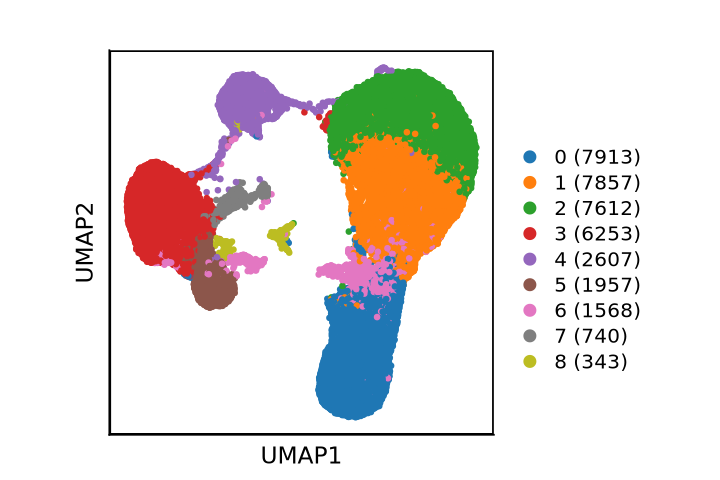

## set up environment
suppressMessages({
library(scUnify)
library(clustree)
setwd("/nemo/lab/caladod/working/Matthew/project/matthew/MH_GSE247917")})
## import seurat objects
obj <- qread("seurat/1_processing/1.4_GSE247917_qc.qs")7 RNA Contamination
Motivation
obj.list <- SplitObject(obj, split.by = "samples")## store a list of 10x output directories as a vector & define sample names
dir <- "/nemo/lab/caladod/scratch/hungm/matthew/MH_GSE247917/cellranger/"
samples = list.files(dir)
dir.list <- paste0(dir, samples, "/outs/per_sample_outs/", samples, "/count/sample_filtered_feature_bc_matrix/")
dir.list- '/nemo/lab/caladod/scratch/hungm/matthew/MH_GSE247917/cellranger/CV10/outs/per_sample_outs/CV10/count/sample_filtered_feature_bc_matrix/'
- '/nemo/lab/caladod/scratch/hungm/matthew/MH_GSE247917/cellranger/CV12/outs/per_sample_outs/CV12/count/sample_filtered_feature_bc_matrix/'
for(i in seq_along(obj.list)){
obj.list[[i]] <- run_decontx(x = obj.list[[i]], raw.dir = dir.list[i], cluster = "integrated_snn_res.0.2")}10X data contains more than one type and is being returned as a list containing matrices of each type.
--------------------------------------------------
Starting DecontX
--------------------------------------------------
Thu Nov 7 00:30:29 2024 .. Analyzing all cells
Thu Nov 7 00:30:29 2024 .... Generating UMAP
Found more than one class "dist" in cache; using the first, from namespace 'BiocGenerics'
Also defined by ‘spam’
Found more than one class "dist" in cache; using the first, from namespace 'BiocGenerics'
Also defined by ‘spam’
Found more than one class "dist" in cache; using the first, from namespace 'BiocGenerics'
Also defined by ‘spam’
Thu Nov 7 00:31:02 2024 .... Estimating contamination
Thu Nov 7 00:31:06 2024 ...... Completed iteration: 10 | converge: 0.004858
Thu Nov 7 00:31:09 2024 ...... Completed iteration: 20 | converge: 0.001528
Thu Nov 7 00:31:10 2024 ...... Completed iteration: 24 | converge: 0.0009542
Thu Nov 7 00:31:10 2024 .. Calculating final decontaminated matrix
--------------------------------------------------
Completed DecontX. Total time: 45.52019 secs
--------------------------------------------------
10X data contains more than one type and is being returned as a list containing matrices of each type.
--------------------------------------------------
Starting DecontX
--------------------------------------------------
Thu Nov 7 00:31:19 2024 .. Analyzing all cells
Thu Nov 7 00:31:19 2024 .... Generating UMAP
Found more than one class "dist" in cache; using the first, from namespace 'BiocGenerics'
Also defined by ‘spam’
Found more than one class "dist" in cache; using the first, from namespace 'BiocGenerics'
Also defined by ‘spam’
Found more than one class "dist" in cache; using the first, from namespace 'BiocGenerics'
Also defined by ‘spam’
Thu Nov 7 00:31:49 2024 .... Estimating contamination
Thu Nov 7 00:31:50 2024 ...... Completed iteration: 10 | converge: 0.04286
Thu Nov 7 00:31:51 2024 ...... Completed iteration: 20 | converge: 0.01919
Thu Nov 7 00:31:52 2024 ...... Completed iteration: 30 | converge: 0.01192
Thu Nov 7 00:31:52 2024 ...... Completed iteration: 40 | converge: 0.009142
Thu Nov 7 00:31:53 2024 ...... Completed iteration: 50 | converge: 0.006919
Thu Nov 7 00:31:54 2024 ...... Completed iteration: 60 | converge: 0.006951
Thu Nov 7 00:31:55 2024 ...... Completed iteration: 70 | converge: 0.006243
Thu Nov 7 00:31:56 2024 ...... Completed iteration: 80 | converge: 0.005062
Thu Nov 7 00:31:56 2024 ...... Completed iteration: 90 | converge: 0.003995
Thu Nov 7 00:31:57 2024 ...... Completed iteration: 100 | converge: 0.003164
Thu Nov 7 00:31:58 2024 ...... Completed iteration: 110 | converge: 0.002441
Thu Nov 7 00:31:59 2024 ...... Completed iteration: 120 | converge: 0.001857
Thu Nov 7 00:31:59 2024 ...... Completed iteration: 130 | converge: 0.001405
Thu Nov 7 00:32:00 2024 ...... Completed iteration: 140 | converge: 0.001063
Thu Nov 7 00:32:00 2024 ...... Completed iteration: 143 | converge: 0.0009736
Thu Nov 7 00:32:00 2024 .. Calculating final decontaminated matrix
--------------------------------------------------
Completed DecontX. Total time: 42.94879 secs
--------------------------------------------------
obj.list[[1]]An object of class Seurat
84349 features across 19484 samples within 8 assays
Active assay: integrated (14868 features, 2000 variable features)
2 layers present: data, scale.data
7 other assays present: RNA, HTO, ADT, BCR, TCR, SCT, DX
2 dimensional reductions calculated: pca, umaphead(obj.list[[1]]@meta.data)| orig.ident | nCount_RNA | nFeature_RNA | nCount_HTO | nFeature_HTO | nCount_ADT | nFeature_ADT | samples | pct.mt | pct.rb | ⋯ | integrated_snn_res.0.5 | integrated_snn_res.0.6 | integrated_snn_res.0.7 | integrated_snn_res.0.8 | integrated_snn_res.0.9 | integrated_snn_res.1 | seurat_clusters | sc.decontx | nCount_DX | nFeature_DX | |
|---|---|---|---|---|---|---|---|---|---|---|---|---|---|---|---|---|---|---|---|---|---|
| <chr> | <dbl> | <int> | <dbl> | <int> | <dbl> | <int> | <chr> | <dbl> | <dbl> | ⋯ | <fct> | <fct> | <fct> | <fct> | <fct> | <fct> | <fct> | <dbl> | <dbl> | <int> | |
| CV10_AAACCTGAGAAGCCCA-1 | SeuratProject | 2075 | 1226 | 91 | 3 | 1336 | 58 | CV10 | 2.602410 | 11.036145 | ⋯ | 0 | 0 | 1 | 6 | 9 | 10 | 10 | 0.0002442453 | 2074.524 | 1226 |
| CV10_AAACCTGAGAGGGATA-1 | SeuratProject | 4110 | 2205 | 257 | 3 | 1008 | 57 | CV10 | 4.452555 | 7.542579 | ⋯ | 2 | 1 | 0 | 0 | 0 | 0 | 0 | 0.0029265071 | 4099.602 | 2205 |
| CV10_AAACCTGAGAGTGACC-1 | SeuratProject | 1216 | 785 | 88 | 2 | 829 | 57 | CV10 | 3.207237 | 18.256579 | ⋯ | 4 | 3 | 4 | 1 | 4 | 5 | 5 | 0.0030700745 | 1212.775 | 785 |
| CV10_AAACCTGAGATATGGT-1 | SeuratProject | 6005 | 2865 | 599 | 4 | 3661 | 57 | CV10 | 5.711907 | 5.911740 | ⋯ | 0 | 0 | 1 | 6 | 9 | 10 | 10 | 0.0168573392 | 5907.521 | 2865 |
| CV10_AAACCTGAGCCAGTAG-1 | SeuratProject | 1318 | 774 | 70 | 3 | 1216 | 58 | CV10 | 3.490137 | 23.216995 | ⋯ | 4 | 2 | 4 | 1 | 5 | 5 | 5 | 0.0010559878 | 1316.788 | 774 |
| CV10_AAACCTGAGCGATATA-1 | SeuratProject | 1739 | 1131 | 84 | 4 | 700 | 57 | CV10 | 4.025302 | 6.382979 | ⋯ | 2 | 1 | 0 | 0 | 0 | 0 | 0 | 0.0022682403 | 1735.578 | 1131 |
obj <- merge(obj.list[[1]], obj.list[2:length(obj.list)])7.1 Quick Processing
obj <- join_layers(obj)
obj <- join_layers(obj, assay = "DX")obj <- integrate_v4(obj, split.by = "samples", assay = "DX", nfeatures = 2000, method = "rpca", k.weight = 100)Running SCTransform on assay: DX
Running SCTransform on layer: counts
vst.flavor='v2' set. Using model with fixed slope and excluding poisson genes.
Variance stabilizing transformation of count matrix of size 21859 by 19484
Model formula is y ~ log_umi
Get Negative Binomial regression parameters per gene
Using 2000 genes, 5000 cells
Found 135 outliers - those will be ignored in fitting/regularization step
Second step: Get residuals using fitted parameters for 21859 genes
Computing corrected count matrix for 21859 genes
Calculating gene attributes
Wall clock passed: Time difference of 1.210969 mins
Determine variable features
Centering data matrix
Getting residuals for block 1(of 4) for counts dataset
Getting residuals for block 2(of 4) for counts dataset
Getting residuals for block 3(of 4) for counts dataset
Getting residuals for block 4(of 4) for counts dataset
Centering data matrix
Finished calculating residuals for counts
Warning message:
“Different cells and/or features from existing assay SCT”
Set default assay to SCT
Running SCTransform on assay: DX
Running SCTransform on layer: counts
vst.flavor='v2' set. Using model with fixed slope and excluding poisson genes.
Variance stabilizing transformation of count matrix of size 14243 by 17366
Model formula is y ~ log_umi
Get Negative Binomial regression parameters per gene
Using 1118 genes, 5000 cells
There are 76 estimated thetas smaller than 1e-07 - will be set to 1e-07
Found 2 outliers - those will be ignored in fitting/regularization step
Second step: Get residuals using fitted parameters for 14243 genes
Computing corrected count matrix for 14243 genes
Calculating gene attributes
Wall clock passed: Time difference of 42.74564 secs
Determine variable features
Centering data matrix
Getting residuals for block 1(of 4) for counts dataset
Getting residuals for block 2(of 4) for counts dataset
Getting residuals for block 3(of 4) for counts dataset
Getting residuals for block 4(of 4) for counts dataset
Centering data matrix
Finished calculating residuals for counts
Warning message:
“Different cells and/or features from existing assay SCT”
Set default assay to SCT
Computing within dataset neighborhoods
Finding all pairwise anchors
Projecting new data onto SVD
Projecting new data onto SVD
Finding neighborhoods
Finding anchors
Found 177 anchors
sct.model: counts on 2000 cells: CV10_AAACCTGAGAAGCCCA-1 .. CV10_ACTATCTGTAGCGTAG-1
Setting min_variance to: 0.04
Calculating residuals of type pearson for 12189 genes
sct.model: counts on 2000 cells: CV10_ACTATCTGTATATGAG-1 .. CV10_ATGTGTGGTATTCTCT-1
Setting min_variance to: 0.04
Calculating residuals of type pearson for 12189 genes
sct.model: counts on 2000 cells: CV10_ATGTGTGGTCGACTAT-1 .. CV10_CATTATCAGGTCATCT-1
Setting min_variance to: 0.04
Calculating residuals of type pearson for 12189 genes
sct.model: counts on 2000 cells: CV10_CATTATCAGTACGATA-1 .. CV10_CGGAGTCTCTCTTGAT-1
Setting min_variance to: 0.04
Calculating residuals of type pearson for 12189 genes
sct.model: counts on 2000 cells: CV10_CGGAGTCTCTTAGCCC-1 .. CV10_CTTAACTTCGAATGGG-1
Setting min_variance to: 0.04
Calculating residuals of type pearson for 12189 genes
sct.model: counts on 2000 cells: CV10_CTTAACTTCGCCATAA-1 .. CV10_GCCTCTACAATCAGAA-1
Setting min_variance to: 0.04
Calculating residuals of type pearson for 12189 genes
sct.model: counts on 2000 cells: CV10_GCCTCTACACAGCCCA-1 .. CV10_GTACGTATCTGGTATG-1
Setting min_variance to: 0.04
Calculating residuals of type pearson for 12189 genes
sct.model: counts on 2000 cells: CV10_GTACTCCAGACTCGGA-1 .. CV10_TATCAGGTCTTGCATT-1
Setting min_variance to: 0.04
Calculating residuals of type pearson for 12189 genes
sct.model: counts on 2000 cells: CV10_TATCAGGTCTTGGGTA-1 .. CV10_TGGACGCAGCCCAATT-1
Setting min_variance to: 0.04
Calculating residuals of type pearson for 12189 genes
sct.model: counts on 1484 cells: CV10_TGGACGCAGCGACGTA-1 .. CV10_TTTGTCATCTTTAGGG-1
Setting min_variance to: 0.04
Calculating residuals of type pearson for 12189 genes
Warning message:
“Different cells and/or features from existing assay SCT”
sct.model: counts on 2000 cells: CV12_AAACCTGAGAGCCTAG-1 .. CV12_ACTTACTGTTTACTCT-1
Setting min_variance to: 0.04
Calculating residuals of type pearson for 12189 genes
sct.model: counts on 2000 cells: CV12_ACTTACTTCAATCACG-1 .. CV12_CAAGATCCAAGCTGTT-1
Setting min_variance to: 0.04
Calculating residuals of type pearson for 12189 genes
sct.model: counts on 2000 cells: CV12_CAAGATCCAATGAAAC-1 .. CV12_CCTAAAGGTGGAAAGA-1
Setting min_variance to: 0.04
Calculating residuals of type pearson for 12189 genes
sct.model: counts on 2000 cells: CV12_CCTAAAGGTGTCAATC-1 .. CV12_CTCACACAGGTACTCT-1
Setting min_variance to: 0.04
Calculating residuals of type pearson for 12189 genes
sct.model: counts on 2000 cells: CV12_CTCACACAGTGGGCTA-1 .. CV12_GATCGTATCACGGTTA-1
Setting min_variance to: 0.04
Calculating residuals of type pearson for 12189 genes
sct.model: counts on 2000 cells: CV12_GATCGTATCATACGGT-1 .. CV12_GGGATGACAGCTATTG-1
Setting min_variance to: 0.04
Calculating residuals of type pearson for 12189 genes
sct.model: counts on 2000 cells: CV12_GGGATGACAGCTCGCA-1 .. CV12_TACTTGTGTCGGCTCA-1
Setting min_variance to: 0.04
Calculating residuals of type pearson for 12189 genes
sct.model: counts on 2000 cells: CV12_TACTTGTGTCTCTTAT-1 .. CV12_TGCTGCTTCGCCCTTA-1
Setting min_variance to: 0.04
Calculating residuals of type pearson for 12189 genes
sct.model: counts on 1366 cells: CV12_TGCTGCTTCGGCGCTA-1 .. CV12_TTTGTCATCTGCCCTA-1
Setting min_variance to: 0.04
Calculating residuals of type pearson for 12189 genes
Warning message:
“Different cells and/or features from existing assay SCT”
Merging dataset 2 into 1
Extracting anchors for merged samples
Finding integration vectors
Finding integration vector weights
Integrating data
Warning message:
“Assay integrated changing from SCTAssay to Assay”
Warning message:
“Different cells and/or features from existing assay integrated”
Warning message in asMethod(object):
“sparse->dense coercion: allocating vector of size 3.9 GiB”
Warning message:
“Assay integrated changing from Assay to SCTAssay”
Warning message:
“Different cells and/or features from existing assay SCT” |======================================================================| 100%
|======================================================================| 100%
|======================================================================| 100%
|======================================================================| 100%
|======================================================================| 100%
|======================================================================| 100%
|======================================================================| 100%
|======================================================================| 100%
|======================================================================| 100%
|======================================================================| 100%
[1] 1
|======================================================================| 100%
|======================================================================| 100%
|======================================================================| 100%
|======================================================================| 100%
|======================================================================| 100%
|======================================================================| 100%
|======================================================================| 100%
|======================================================================| 100%
|======================================================================| 100%
[1] 2options(repr.plot.width=5, repr.plot.height=4)
obj <- RunPCA(obj)
ElbowPlot(obj, ndims = 30, reduction = "pca")PC_ 1
Positive: SEPTIN5, ERBB2, IL7R, TBK1, GNLY, AL050309.1, RORA, LEF1, PLEKHB2, RNF135
TGFBR3, CCL5, PDE3B, NELL2, KAT5, CD5, HIVEP2, TWF2, NKG7, NCAPD2
CD8A, ADAM9, NADK, ITK, GZMK, C16orf72, ZMIZ2, HIRIP3, G6PD, LTB
Negative: ZNF385D, CDK6, MED12L, ATP8B4, GUCY1B1, TUBB1, SOX4, DEPTOR, MMRN1, IL1B
ZNF804A, CD74, TAFA2, TCF4, ANKRD28, NFE2, PYGL, PRSS57, MPP1, H1F0
STON2, STMN1, HMOX1, EREG, LRMDA, KDM5B, G0S2, CFAP54, FTH1, SLC8A1
PC_ 2
Positive: ZNF385D, GNLY, PRF1, NKG7, IL7R, CTSW, CD247, MALAT1, CCL5, LEF1
INPP4B, HIST1H1E, CD69, IL2RB, GZMB, NELL2, KLRK1, ITK, THEMIS, FGFBP2
SYNE2, TESPA1, RPS12, SPOCK2, CST7, ZAP70, STAT4, LTB, SYNE1, MYOM2
Negative: LYZ, S100A9, FOS, VCAN, IFI30, PSAP, S100A8, FTL, CD74, FTH1
FCN1, CST3, NAMPT, SAT1, CTSS, SERPINA1, MNDA, TNFAIP2, CYBB, NEAT1
CD36, AIF1, PLAUR, DMXL2, SPI1, TYMP, LRMDA, TYROBP, SLC8A1, PLXDC2
PC_ 3
Positive: GNLY, NKG7, PRF1, CTSW, CX3CR1, FGFBP2, GZMB, FCGR3A, MYOM2, SPON2
CCL5, ZNF385D, CD247, IL2RB, CST7, KLRF1, GZMA, GZMH, ADGRG1, TGFBR3
SH2D1B, PRSS23, SYNE1, C1orf21, AOAH, NCAM1, S1PR5, FLNA, GK5, ITGAM
Negative: CD74, MS4A1, BANK1, AFF3, RALGPS2, LINC00926, HLA-DRA, HLA-DQA1, FCRLA, PAX5
HLA-DQB1, EBF1, NIBAN3, ADAM28, HLA-DRB1, RUBCNL, HLA-DPB1, CDK14, HLA-DPA1, SWAP70
COBLL1, P2RX5, BLNK, COL19A1, BACH2, AC120193.1, WDFY4, OSBPL10, CD79B, CD22
PC_ 4
Positive: IL7R, LEF1, INPP4B, NELL2, TPT1, AL138963.4, RPS12, THEMIS, RCAN3, CD5
PDE3B, SERINC5, TSHZ2, RPL13, TRAT1, MAML2, RPLP1, RPL10, TESPA1, IL6ST
CD28, SELL, DGKA, PIK3IP1, FHIT, S100A9, OXNAD1, TRABD2A, AQP3, RPLP0
Negative: CD74, GNLY, NKG7, PRF1, MS4A1, BANK1, GZMB, CX3CR1, FCGR3A, FGFBP2
MYOM2, SPON2, CTSW, AFF3, RALGPS2, CST7, HLA-DRA, CCL5, KLRF1, IL2RB
HLA-DQA1, LINC00926, GZMH, SH2D1B, ADGRG1, HLA-DPB1, HLA-DPA1, GZMA, PRSS23, MCTP2
PC_ 5
Positive: TCF7L2, FCGR3A, MS4A7, PSAP, SERPINA1, PECAM1, CSF1R, LST1, WARS, LILRB2
SIGLEC10, IFITM3, MTSS1, AIF1, HMOX1, IFI30, FTH1, LRRC25, FTL, CST3
LILRA1, LILRB1, CD68, FCER1G, ADGRE2, HCK, CFD, LINC02432, RHOC, PILRA
Negative: S100A9, VCAN, S100A8, LYZ, FOS, S100A12, THBS1, CD36, PLAUR, VCAN-AS1
ARHGAP26, ACSL1, PLCB1, CSF3R, MS4A1, CD14, BANK1, NAIP, JUN, NCF1
AC020656.1, DYSF, SLC2A3, IER3, TREM1, ARHGAP24, PLBD1, PTPRE, IER2, AC007952.4

obj <- RunUMAP(obj, dims = 1:10, reduction = "pca", reduction.name = "umap", assay = "RNA", verbose = FALSE)Found more than one class "dist" in cache; using the first, from namespace 'BiocGenerics'
Also defined by ‘spam’
Found more than one class "dist" in cache; using the first, from namespace 'BiocGenerics'
Also defined by ‘spam’
options(repr.plot.width=20, repr.plot.height=5)
p1 <- scUMAP(obj, reduction = "umap", group.by = "samples", count = T)
p2 <- scUMAP(obj, reduction = "umap", group.by = "softqc", count = T)
p3 <- scUMAP(obj, reduction = "umap", group.by = "MULTI.global", count = T)
p4 <- scUMAP(obj, reduction = "umap", group.by = "finalqc", count = T)
plot_grid(p1, p2, p3, p4, ncol = 4, align = "hv")
obj <- FindNeighbors(obj, reduction = "pca", dims = 1:10, verbose = F)
obj <- FindClusters(obj, resolution = seq(0.1, 1, 0.1), algorithm = 1, verbose = F)
clustree <- clustree(obj@meta.data, prefix = paste0("integrated_snn_res."))options(repr.plot.width=15, repr.plot.height=10)
print(clustree)
objAn object of class Seurat
60789 features across 36850 samples within 7 assays
Active assay: integrated (14868 features, 2000 variable features)
2 layers present: data, scale.data
6 other assays present: RNA, HTO, ADT, BCR, TCR, SCT
2 dimensional reductions calculated: pca, umapoptions(repr.plot.width=6, repr.plot.height=4)
scUMAP(obj, reduction = "umap", group.by = "integrated_snn_res.0.2", count = T, pt.size = 1.2, cols = palette_list[["vega_10"]])Scale for colour is already present.
Adding another scale for colour, which will replace the existing scale.
Scale for colour is already present.
Adding another scale for colour, which will replace the existing scale.
qsave(obj, "seurat/1_processing/1.5_GSE247917_decont.qs")run_decontx <- function(x, raw.dir, cluster = NULL, assay = "RNA"){
toc <- x[[assay]]$counts
tod <- Read10X(raw.dir)[["Gene Expression"]]
colnames(tod) <- paste0(gsub("_.*", "", colnames(toc)[1]), "_", colnames(tod))
tod <- tod[rownames(toc), which(!colnames(tod) %in% colnames(toc))]
output <- celda::decontX(toc, background = tod, z = cluster)
## add contamination score
score <- data.frame(sc.decontx = output$contamination)
rownames(score) <- colnames(output$decontXcounts)
x <- AddMetaData(x, score)
## add decontaminated counts
rna.clean <- as(output$decontXcounts[,colnames(x)], "sparseMatrix")
x[["DX"]] <- CreateAssay5Object(counts = rna.clean, min.cells = 0, min.features = 0)
return(x)
}